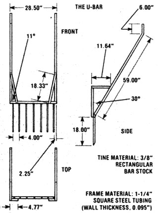

How To Build A Broadfork
Prepare the soil in your raised bed in one-sixth the time using a U-bar, also known as a broadfork.
By the Mother Earth News editors
March/April 1980
This article on how to build a broadfork is excerpted from the March/April 1980 Plowboy Interview with John Jeavons, author of "How to Grow More Vegetables and Fruits (and Fruits, Nuts, Berries, Grains, and Other Crops) Than You Ever Thought Possible on Less Land Than You Can Imagine."
Because the good folks at Common Ground feel that even intermediate technology is often beyond the financial reach of the people who need it the most, they're constantly looking for sophisticated low technology solutions to the problems presented by small-scale agriculture.
One such innovation-the broadfork also known as a U-bar, shown in the accompanying photos and drawings - was designed at John Jeavons' request by two Stanford University engineering students ... who worked from traditional French and Canadian designs for similar tools. The digging implement is used after a bed has been initially well prepared with a spade and fork, and can - for all subsequent preparations - reduce the required digging time from approximately two hours per 100-square-foot bed to 20 minutes or less!
John has graciously allowed us to publish these drawings of a broadfork . . . so anyone who wants to try biointensive gardening can cut his or her labor time while keeping yields up.
 John Jeavons U-bar uses |
 The U-bar |
|